산업안전산업기사 (2010-03-07 기출문제)
1과목: 산업안전관리론
1. 밀폐작업공간에서 유해물과 분진이 있는 상태에서 작업 할 때 가장 적합한 보호구는?
- 방진마스크
- 방독마스크
- 송기마스크
- 보안경
(정답률: 64%)

2. 무재해운동의 추진기법 중 위험예지훈련의 4라운드에서 제3단계 진행방법에 해당하는 것은?
- 목표설정
- 현상파악
- 본질추구
- 대책수립
(정답률: 79%)
3. 레윈(Lewin)은 인간행동과 인간의 조건 및 환경조건의 관계를 다음과 같이 표시하였다. 이 때 "f" 를 설명한 것으로 옳은 것은?
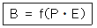
- 행동
- 조명
- 지능
- 함수
(정답률: 87%)
4. 재해예방대책의 기본원리 5단계 중 제4단계의 내용으로 적절하지 않은 것은?
- 기술적인 개선
- 작업배치의 조정
- 교육훈련의 개선
- 작업 분석 및 평가
(정답률: 68%)
5. 강의계획에 있어 학습목적의 3요소에 해당되지 않는 것은?
- 목표
- 주제
- 학습내용
- 학습정도
(정답률: 51%)
6. 다음 중 안전교육의 3요소로만 이루어진 것은?
- 강사, 수강자, 교재
- 강사, 교재, 교육장소
- 수강자, 교재, 교육시설
- 강사, 인간관계, 교재
(정답률: 88%)
7. 재해 통계적 원인 분석시 사고의 유형, 기인물 등 분류 항목을 큰 순서대로 도표한 것은?
- 파레토도
- 특성요인도
- 크로스도
- 관리도
(정답률: 77%)
8. 재해의 간접원인 중 관리적 원인에 해당하는 것은?
- 작업지시 부적절
- 안전수칙의 오해
- 경험훈련의 미숙
- 안전지식의 부족
(정답률: 76%)
9. 안전교육훈련의 기법 중 교시법의 4단계를 올바르게 나열한 것은?
- 실연 → 도입 → 실습 → 확인
- 확인 → 도입 → 실연 → 실습
- 도입 → 실연 → 실습 → 확인
- 도입 → 실습 → 실연 → 확인
(정답률: 64%)
10. 다음 중 산업심리의 5대 요소가 아닌 것은?
- 동기
- 지능
- 감정
- 습관
(정답률: 71%)
11. 맥그리거(Mcgregor)의 X이론과 Y이론 중에 Y이론에 해당되는 것은?
- 인간은 서로 믿을 수 없다.
- 인간은 태어나서부터 악하다
- 인간은 정신적 욕구를 우선시 한다.
- 인간은 통제에 의한 관리를 받고자 한다.
(정답률: 73%)
12. 작업을 하고 있을 때 걱정거리, 고민거리, 욕구불만 등에 의해 다른데 정신을 빼앗기는 부주의 현상은?
- 의식의 중단
- 의식의 우회
- 의식수준의 저하
- 의식의 과잉
(정답률: 84%)
13. 다음 중 평균 근로자 수가 1000명 이상의 대규모 사업장에 가장 적합한 안전조직은?
- 라인(line)형 안전조직
- 스태프(staff)형 안전조직
- 라인-스태프(line-staff)형 혼합조직
- 생산부서장의 안전책임자 겸직조직
(정답률: 85%)
14. 다음 중 무재해 운동의 이념 3원칙과 거리가 먼 것은?
- 무의 원칙
- 자주활동의 원칙
- 참가의 원칙
- 선취 해결의 원칙
(정답률: 74%)
15. 기계⋅기구 또는 설비의 신설, 변경 또는 고장 수리 등 부정기적인 점검을 말하며 기술적 책임자가 시행하 는 점검을 무슨 점검이라 하는가?
- 정기점검
- 수시점검
- 특별점검
- 임시점검
(정답률: 71%)
16. 산업안전보건법상 안전⋅보건표지 중 폭발성물질경고의 색채에 관한 설명으로 옳은 것은?
- 바탕은 파란색, 관련 그림은 흰색
- 바탕은 무색, 기본모형은 빨간색
- 바탕은 흰색, 기본모형 및 관련 부호는 녹색
- 바탕은 노란색, 기본모형, 관련 부호 및 그림은 검은색
(정답률: 68%)
17. 연간 근로자수가 500명인 A공장에서 지난 1년간 발생한 5건의 재해로 인하여 신체장해등급이 1급 1명, 14급 5명이 발생하였다. 이 공장의 강도율은 약 얼마인가? (단, 근로자 1인당 1일 8시간씩 연간 300시간을 근무 하였다.)
- 4.17
- 6.46
- 10
- 12
(정답률: 50%)
18. 의사결정 과정에 따른 리더십의 유형 중에서 민주형에 속하는 것은?
- 집단 구성원에게 자유를 준다.
- 지도자가 모든 정책을 결정한다.
- 집단토론이나 집단결정을 통해서 정책을 결정한다
- 명목적인 리더의 자리를 지키고 부하직원들에게 의견에 따른다.
(정답률: 74%)
19. 다음 중 교육훈련의 평가방법의 종류가 아닌 것은?
- 관찰법
- 면접법
- 실연법
- 자료분석법
(정답률: 58%)
20. 다음 중 산업안전보건법상 특별안전ㆍ보건교육 대상 작업이 아닌 것은?
- 건설용 리프트ㆍ곤돌라를 이용한 작업
- 전압이 50볼트인 정전 및 활선작업
- 화학설비 중 반응기, 교반기ㆍ추출기의 사용 및 세척작업
- 액화석유가스ㆍ수소가스 등 인화성 가스 또는 폭발성 물질 중 가스의 발생장치 취급 작업
(정답률: 80%)
2과목: 인간공학 및 시스템안전공학
21. 다음 중 수공구의 일반적인 설계 원칙과 거리가 먼 것은?
- 손목은 곧게 유지되도록 설계한다.
- 손가락 동작의 반복을 피하도록 설계한다.
- 손잡이는 손바닥과의 접촉면적이 작게 설계한다.
- 공구의 무게를 줄이고 사용시 균형이 유지되도록 한다.
(정답률: 82%)
22. 다음 중 작업설계를 함에 있어서 작업만족도를 얻기 위한 수단으로 볼 수 없는 것은?
- 작업 순환
- 작업 분석
- 작업 윤택화
- 작업 확대
(정답률: 39%)
23. 다음 중 직렬 구조를 갖는 시스템의 특성을 설명한 것으로 틀린 것은?
- 요소(要素) 중 어느 하나가 고장이면 시스템은 고장 이다.
- 요소의 수가 적을수록 시스템의 신뢰도는 높아진다.
- 요소의 수가 많을수록 시스템의 수명은 짧아진다.
- 시스템의 수명은 요소 중에서 수명이 가장 긴 것으로 정해진다.
(정답률: 67%)
24. 다음 중 출력되는 값을 정확히 읽어야 하는 경우에 가장 적합한 시각적 표시장치의 형태는?
- 동침형
- 동목형
- 수직형
- 계수형
(정답률: 76%)
25. 다음 중 결함수분석법(FTA)에 관한 설명으로 틀린 것은?
- 최초 watson이 군용으로 고안하였다.
- 미니멀 패스(minimal path sets)를 구하기 위해서는 미니멀 컷(minimal cut set)의 상대성을 이용 한다.
- 정상사상의 발생확률을 구한 다음 FT를 작성한다
- AND 게이트의 확률 계산은 입력사상의 곱으로 한다.
(정답률: 60%)
26. 건강한 남성이 8시간 동안 특정 작업을 실시하고, 분당 산소 공급량이 1.3L/분으로 나타났다면 8시간 총 작업시간에 포함될 휴식시간은 약 몇 분인가? (단, Murrell의 방법을 적용하여, 휴식 중 에너지 소비율은 1.5Kcal/min 이다.)
- 144분
- 154분
- 164분
- 174분
(정답률: 44%)
27. 산업안전보건법에서 정한 물리적 인자의 분류 기준에 있어서 소음성난청을 유발할 수 있는 몇 dB(A) 이상의 시끄러운 소리를 소음으로 규정하고 있는가?
- 80
- 85
- 90
- 100
(정답률: 67%)
28. 인간공학의 연구 방법에서 체계 개발에 있어 사용될 수 있는 인간기준이 아닌 것은?
- 인간성능 척도
- 객관적 반응
- 생리학적 지표
- 사고 빈도
(정답률: 58%)
29. 통제기기에서 통제기기의 변위를 15mm 움직였을 때 표시계기의 지침이 25mm 움직였다면 이 기기의 통제 표시비(C/D비)는 얼마인가?
- 0.4
- 0.5
- 0.6
- 0.7
(정답률: 74%)
30. [보기]와 같은 위험관리의 단계를 순서대로 올바르게 나열한 것은?
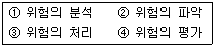
- ① → ② → ③ → ④
- ② → ③ → ① → ④
- ② → ① → ④ → ③
- ① → ③ → ② → ④
(정답률: 66%)
31. 3개의 서로 다른 부품이 OR gate에 연결된 FTA 모델이 있다. 각 부품의 고장확률은 0.2 이고, “시스템이 작동 안됨” 을 정상사상(top event)으로 했을 때 정상사상이 발생할 확률은 얼마인가?
- 0.008
- 0.488
- 0.512
- 0.992
(정답률: 55%)
32. 다음 중 공장설비의 고장원인 분석 방법으로 적당하지 않은 것은?
- 고장원인 분석은 언제, 누가, 어떻게 행하는가를 그 때의 상황에 따라 결정한다.
- P-Q 분석도에 의한 고장대책으로 빈도가 높은 고장에 대하여 근본적인 대책을 수립한다.
- 동일기종이 다수 설치되었을 때는 공통된 고장 개소, 원인 등을 규명하여 개선하고 자료를 작성 한다.
- 발생한 고장에 대하여 그 개소, 원인, 수리상의 문제점, 생산에 미치는 영향 등을 조사하고 재발방지계획을 수립한다.
(정답률: 58%)
33. 다음 중 정보의 측정단위인 bit 를 올바르게 설명한 것은?
- 실현가능성이 같은 2개의 대안 중 하나가 명시되었을 때 얻는 정보량
- 실현가능성이 같은 4개의 대안 중 하나가 명시되었을 때 얻는 정보량
- 실현가능성이 같은 8개의 대안 중 하나가 명시되었을 때 얻는 정보량
- 실현가능성이 같은 16개의 대안 중 하나가 명시되었을 때 얻는 정보량
(정답률: 64%)
34. 다음 중 진동이 인간 성능에 미치는 일반적인 영향과 거리가 먼 것은?
- 진동은 진폭에 비례하여 시력을 손상하며 10-25Hz의 경우에 가장 심하다.
- 진동은 진폭에 비례하여 추적능력을 손상하며 5Hz 이하의 낮은 진동수에서 가장 심하다.
- 안정되고 정확한 근육 조절을 요하는 작업은 진동에 의해서 저하된다.
- 반응시간, 감시, 형태 식별 등 주로 중앙 신경처리에 달린 임무는 진동의 영향에 민감하다.
(정답률: 40%)
35. FT도에 사용되는 다음의 기호가 의미하는 내용으로 옳은 것은?
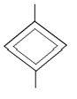
- 생략사상으로서 간소화
- 생략사상으로서 인간의 실수
- 생략사상으로서 조직자의 간과
- 생략사상으로서 시스템의 고장
(정답률: 57%)
36. 다음 중 인간과 기계의 능력에 대한 실용성 한계에 관한 설명과 가장 거리가 먼 것은?
- 일반적인 인간과 기계의 비교가 항상 적용된다.
- 상대적인 비교는 항상 변하기 마련이다.
- 기능의 수행이 유일한 기준은 아니다.
- 최선의 성능을 마련하는 것이 항상 중요한 것은 아니다.
(정답률: 58%)
37. 정보를 전송하기 위한 표시장치 중 시각장치보다 청각 장치를 사용해야 더 좋은 경우는?
- 메시지가 나중에 재참조되는 경우
- 메시지가 공간적인 위치를 다투는 경우
- 수신자의 청각계통이 과부하상태인 경우
- 직무상 수신자가 자주 움직이는 경우
(정답률: 73%)
38. 다음 중 예비위험분석 (PHA)에 관한 설명으로 가장 적절한 것은?
- 시스템안전 위험분석을 수행하기 위한 예비적인 최초의 작업으로 위험요소가 얼마나 위험한지를 평가한다.
- 손실과 인명의 사상에 연결되는 높은 위험도를 가진 요소나 고장의 형태에 따른 분석법이다.
- 각 서브 시스템 및 전시스템의 안전성이 악영향을 끼치지 않게 하기 위한 분석기법이다.
- 원자력 발전과 같이 관리, 설계, 생산, 보존 등에 대해서 광범위하게 안전성을 확보하기 위한 기법 이다.
(정답률: 74%)
39. 다음 중 암호체계 사용상의 일반적인 지침에서 “암호의 변별성“을 의미하는 것으로 가장 적절한 것은?
- 암호화한 자극은 감지장치나 사람이 감지할 수 있어야 한다.
- 모든 암호의 표시는 다른 암호 표시와 구분될 수 있어야 한다.
- 암호를 사용할 때에는 사용자가 그 뜻을 분명히 알 수 있어야 한다.
- 두 가지 이상의 암호 차원을 조합해서 사용하면 정보전달이 촉진된다.
(정답률: 70%)
40. 광도(luminance)는 단위면적당 표면에서 반사되는 광량(光量)을 말한다. 다음 중 광도의 단위가 아닌 것은?
- Lambert(L)
- candle-Lambert(cdL)
- foot-Lambert
- nit(cd/m2)
(정답률: 46%)
3과목: 기계위험방지기술
41. 선반 등으로 부터 돌출하여 회전하고 있는 가공물에 설치 할 방호장치는?
- 클러치
- 울
- 슬리브
- 베드
(정답률: 71%)
42. 금형의 파손을 방지하기 위하여 부품조립 시 주의해야 할 사항으로 거리가 먼 것은?
- 위치 결정 블록을 사용한다.
- 다우웰 핀은 압입으로 한다.
- 금형에 사용하는 스프링은 압축형으로 한다.
- 볼트 너트는 스프링 와셔 등으로 이완을 방지한다
(정답률: 37%)
43. 숫돌의 지름이 D[mm], 회전수N[rpm]이라 할 때 연삭 숫돌의 원주속도V[m/min]를 구하는 식으로 옳은 것은?
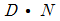
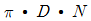
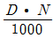
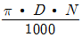
(정답률: 76%)
44. 기계의 운전상태에서 점검할 사항으로 거리가 먼 것은
- 기어의 물림상태
- 급유확인
- 베어링의 온도상승
- 소음, 진동 유무
(정답률: 63%)
45. 위험한 작업점과 작업자 사이에 서로 접근되어 일어날 수 있는 재해를 방지하는 격리형 방호장치가 아닌 것은?
- 완전 차단형 방호장치
- 덮개형 방호장치
- 안전방책
- 양수조작식 방호장치
(정답률: 63%)
46. 가스집합장치의 위험방지를 위하여 사업주는 화기를 사용하는 설비로부터 몇m 이상 떨어진 장소에 가스집합장치를 설치하여야 하는가?
- 20
- 10
- 7
- 5
(정답률: 49%)
47. 연삭기의 사용 시 안전조치로 거리가 먼 것은?
- 연삭기작업 시작 전 1분 이상, 연삭숫돌을 교체한 후 3분 이상 시운전한다.
- 작업시작 전에 연삭숫돌의 결함유무 확인한다.
- 연삭숫돌의 최고사용속도를 초과하지 않는 범위에서 사용한다.
- 작업의 능률을 위해서는 연삭기의 정면과 측면을 교대로 사용한다.
(정답률: 80%)
48. 양중기에 사용하지 않아야 하는 달기체인의 조건 기준으로 틀린 것은?
- 변형이 심한 것.
- 균열이 있는 것.
- 길이의 증가가 제조시보다 3%를 초과한 것.
- 링의 단면지름의 감소가 링 지름의 10%를 초과 한 것.
(정답률: 72%)
49. 목재 가공용 둥근톱의 두꼐가 3mm 일 때 분할날의 두꼐는 톱날두께의 몇mm 이상으로 해야 하는가?
- 3.6
- 3.3
- 4.8
- 4.5
(정답률: 73%)
50. 롤러기의 가드 설치 시에 개구부 간격을 계산하는 식은? (단, Y : 개구부 간격, X : 개구부에서 위험점까지 최단거리, X는 160mm 미만의 경우의 식을 구한다.)
- Y = 6+0.15X
- X = 6+0.15Y
- Y = 6+10X
- X = 6+Y/10
(정답률: 59%)
51. 동력을 사용하여 가이드레일을 따라 상하로 움직이는 운반구를 매달아 화물을 운반할 수 있는 설비 또는 이와 유사한 구조 및 성능을 가진 것으로 건설 현장외의 장소에서 사용하는 것은?
- 일반 작업용 리프트
- 간이 리프트
- 곤돌라
- 화물용 승강이
(정답률: 54%)
52. 로울러기에서 조작부에 로프를 사용하는 급정지 장치를 사용할 경우 로프의 파단강도 기준은?
- 740N 이상
- 1470N 이상
- 2940N 이상
- 3860N 이상
(정답률: 46%)
53. 드릴링 작업에 있어서 공작물을 고정하는 방법으로 옳지 않은 것은?
- 작은 공작물은 바이스로 고정한다.
- 작고 길쭉한 공작물은 플라이어로 고정한다.
- 대량 생산과 정밀도를 요구할 때는 지그로 고정한다.
- 공작물이 크고 복잡할 때는 볼트의 고정구로 고정한다.
(정답률: 71%)
54. 컨베이어에 설치하는 방호장치 중 가장 거리가 먼 것은?
- 이탈 및 역주행 방지 장치
- 조속기
- 비상정지장치
- 건널다리
(정답률: 70%)
55. 아세틸렌은 특정 금속과 결합 시 폭발을 쉽게 일으킬 수 있는 물질로 변한다. 이 금속에 해당하지 않는 것은?
- 은
- 구리
- 수은
- 철
(정답률: 60%)
56. 보일러의 부식원인 중 거리가 먼 것은?
- 급수에 해로운 불순물이 혼입되었을 때
- 불순물을 사용하여 수관이 부식되었을 때
- 급수처리를 하지 않은 물을 사용할 때
- 증기발생이 과다할 때
(정답률: 68%)
57. 아세틸렌 용접장치에서 사용되는 수봉식 혹은 건식 안전기를 취급할 때의 주의 사항으로 틀린 것은?
- 건식 안전기는 아무나 분해 또는 수리하지 않는다
- 수봉식 안전기는 지면에 평행하게 설치하여 사용한다.
- 수봉식 안전기는 항상 지정된 수위를 유지하도록 주의 한다.
- 수봉식 안전기의 수봉부의 물이 얼었을 때는 더운 물로 녹인다.
(정답률: 57%)
58. 프레스금형을 부착, 해체 또는 조정 작업을 하는 때에 사용해야 하는 안전장치는?
- 광전자식 안전장치
- 양수조작식 안전장치
- 안전방책
- 안전블록
(정답률: 70%)
59. 안전계수 6인 로프의 파단 하중이 1116kgf이라면, 이 로프는 몇 kgf 이하로 물건을 매달아야 하는가?
- 186
- 279
- 1116
- 6696
(정답률: 70%)
60. 기계의 동작상태가 설정한 순서, 조건에 따라 진행되어, 한 가지 상태의 종류가 다음 상태를 생성하는 제어 시스템을 가진 로봇은?
- 플레이백 로봇
- 학습 제어 로봇
- 수치 제어 로봇
- 스퀀스 로봇
(정답률: 69%)
4과목: 전기 및 화학설비위험방지기술
61. 다음 중 니트로글리세린에 관한 설명으로 틀린 것은?
- 물에 잘 녹으며, 액체 상태로 운반한다.
- 점화하면 즉시 연소하고, 다량이면 폭발력이 강하다.
- 상온에서 액체이지만 겨울철에는 동결한다.
- 질산과 황산의 혼산 중에 글리세린을 반응시켜 만든다.
(정답률: 52%)
62. 저항 값이 0.1Ω 인 도체에 10A 의 전류가 1분간 흘렸을 경우 발생하는 열량은 몇cal 인가?
- 124
- 144
- 166
- 250
(정답률: 69%)
63. 1초 동안에 1C의 전하량이 이동할 때 흐르는 전류는 몇 A 인가?
- 0.017
- 0.1
- 1
- 10
(정답률: 59%)
64. 위험물 저장소에 빗물이 스며들자 불꽃이 일어나면서 보관 중이던 물질이 폭발하였다면 다음 중 저장소에 보관중인 물건으로 추정되는 것은?
- 과염소산나트륨
- 나트륨
- 피크린산
- 트리니트로톨루엔(TNT)
(정답률: 53%)
65. 다음 중 제3종 접지공사의 접지저항값으로 옳은 것은?(오류 신고가 접수된 문제입니다. 반드시 정답과 해설을 확인하시기 바랍니다.)
- 10Ω 이하
- 100Ω 이하
- 150Ω 이하
- 300Ω 이하
(정답률: 51%)
66. 특(별)고압 활선작업에서 근로자의 신체와 충전전로 사이의 사용전압에 따른 접근한계거리를 잘못 나열한 것은?
- 사용전압:0.75kV 접근한계거리:30cm
- 사용전압:15kV 접근한계거리:60cm
- 사용전압:37kV 접근한계거리:90cm
- 사용전압:200kV 접근한계거리:140cm
(정답률: 50%)
67. 다음 중 누전차단기의 설치에 관한 설명으로 적절하지 않은 것은?
- 비나 이슬에 젖지 않은 장소에 설치한다.
- 누전차단기의 설치는 고도와 관계가 없다.
- 전원전압의 변동에 유의하여야 한다.
- 진동 또는 충격을 받지 않도록 한다.
(정답률: 79%)
68. 폭발물 원인물질의 물리적 상태에 따라 기상폭발과 응상폭발로 분류할 때 다음 중 응상폭발에 해당되는 것은?
- 분우폭발
- 가스폭발
- 분진폭발
- 수증기폭발
(정답률: 52%)
69. 다음 중 위험물에 대한 일반적 개념으로 옳지 않은 것은?
- 반응속도가 급격히 진행된다.
- 화학적 구조 및 결합력이 불안정하다.
- 대부분 화학적 구조가 복잡한 고분자 물질이다.
- 그 자체가 위험하다든가 또는 환경 조건에 따라 쉽게 위험성을 나타내는 물질을 말한다.
(정답률: 69%)
70. 혼합가스의 조성이 다음 [표]와 같을 때 공기 중 폭발하한계는 약 몇 vol% 인가?
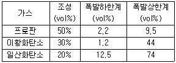
- 1.20
- 2.03
- 3.67
- 5.30
(정답률: 55%)
71. 고압 또는 특(별)고압 전로 중 기계⋅기구 및 전선을 보호하기 위하여 필요한 곳에 과전류 차단기를 설치해야 하는데 이와 관련하여 올바르게 설명한 것은?
- 전로의 일부에 접지공사를 한 저압 가공전선로의 접지측 전선로에 설치한다.
- 다선식 전로의 중심선에 시설한 과전류차단기가 동작한 경우에 각 극이 동시에 차단될 때 설치한다.
- 고압 또는 특(별)고압의 전로에 단락이 생기는 경우 설치한다.
- 전로의 중심점의 접지 규정에 의한 저항기를 사용하여 접지공사를 한 때에 과전류 차단기의 동작에 의하여 그 접지선이 비접지 상태로 되지 아니할 때 설치한다.
(정답률: 45%)
72. 다음 중 정전기로 인한 재해의 방지대책으로 틀린 것은?
- 접지
- 보호구의 착용
- 배관내 액체의 유속 증가
- 습도가 일정 이상이 되도록 유지
(정답률: 72%)
73. 가연성인 기체, 액체 또는 고체 등이 공기 속에서 연소를 할 때의 연소 형식이 아닌 것은?
- 증발연소
- 분해연소
- 한계연소
- 표면연소
(정답률: 57%)
74. 화학장치에서 반응기의 위험성을 점검하고 있다. 반응기에서 화학반응이 있을 때 특히 유의할 사항들로 나열한 것은?
- 낙하, 절단
- 감전, 협착
- 비래, 붕괴
- 반응폭주, 과압
(정답률: 78%)
75. 다음 중 물을 소화재로 사용하는 주된 이유로 가장 적합한 것은?
- 기화되기 쉬우므로
- 증발 잠열이 크므로
- 환원성이므로
- 부촉매 효과가 있으므로
(정답률: 62%)
76. 위험분위기가 존재하는 장소의 전기기기에 방폭 성능을 갖추기 위한 일반적 방법으로 적절하지 않은 것은?
- 점화원의 격리
- 전기기기 안전도 증강
- 점화능력의 본질적 억제
- 점화원으로 되는 확률을 0 으로 낮춤
(정답률: 60%)
77. 두 개의 전하량이 같은 정전하가 진공 중에서 1m 떨어져 있을 때 작용하는 힘이 9×109N 이면 이들 중 각 점전하의 전기량은 몇 C(쿨롱)인가?(단, 단위계에 의해 정해지는 비례상수는9×109이다.)
- 0.01
- 0.1
- 1
- 1.9×109
(정답률: 42%)
78. 다음 중 할로겐화합물 소화약제의 주된 효과는?
- 냉각효과
- 억제효과
- 질식효과
- 제거효과
(정답률: 54%)
79. 화학설비의 안전장치로서 파열판을 설치해야 하는 경우와 가장 거리가 먼 것은?
- 급격한 압력 상승의 우려가 있는 경우
- 진공에 의해 파손될 우려가 있는 경우
- 방출량이 많고 순간적으로 많은 방출이 필요한 경우
- 물질의 물리적 상태변화에 대응하기 위한 경우
(정답률: 47%)
80. 다음 정의에 해당하는 방폭구조는?
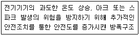
- 내압방폭구조
- 안전증방폭구조
- 본질안전방폭구조
- 유입방폭구조
(정답률: 71%)
5과목: 건설안전기술
81. 고소 작업에서 이동식 사다리를 사용할 때 걸치는 경사 각도는 수평에 대하여 몇도 정도가 적당한가?
- 45°
- 60°
- 75°
- 85°
(정답률: 50%)
82. 흙의 상태는 함수량에 따라 액체, 소성, 반고체, 고체 등으로 변화하는데 이러한 흙의 성질을 무엇이라 하는가?
- 흙의 팽창
- 흙의 연경도
- 흙의 다짐
- 흙의 밀도
(정답률: 64%)
83. 다음 중 모래지반의 내부 마찰각을 구할 수 있는 시험 방법은?
- 웰 포인트
- 표준관입시험
- 지내력시험
- 베인테스트
(정답률: 42%)
84. 양질 변화 구간 및 이상 양질 출현시 판별 방법과 가장 거리가 먼 것은?
- R.Q.D(%)
- R.M.R
- 탄성파 속도(cm/sec = kine)
- 지표침하량(cm)
(정답률: 54%)
85. 다음 중 거푸집동바리 설계 시 고려하여야 할 연직방향 하중에 해당하지 않는 것은?
- 적설하중
- 풍하중
- 충격하중
- 작업하중
(정답률: 69%)
86. 차량계 하역운반기계에서 화물을 싣거나 내리는 작업에서 작업지휘자가 준수해야할 사항과 가장 거리가 먼 것은?
- 작업순서 및 그 순서마다의 작업방법을 정하고 작업을 지휘하는 일
- 기구 및 공구를 점검하고 불량품을 제거하는 일
- 당해 작업을 행하는 장소에 관계근로자외의 자의 출입을 금지하는 일
- 총 화물량을 산출하는 일
(정답률: 62%)
87. 옹벽의 안정조건에서 활동에 대한 저항력은 옹벽에 작용하는 수평력보다 최소 몇 배 이상 되어야 하는가?
- 1.0배
- 1.5배
- 2.0배
- 3.0배
(정답률: 63%)
88. 콘크리트 타설 작업 시 준수사항으로 옳지 않은 것은?
- 바닥위에 흘린 콘크리트는 완전히 청소한다.
- 가능한 높은 곳으로부터 자연 낙하시켜 콘크리트를 타설 한다.
- 지나친 진동기 사용은 재료분리를 일으킬 수 있으므로 금해야 한다.
- 최상부의 슬래브는 이어붓기를 되도록 피하고 일시에 전체를 타설하도록 한다.
(정답률: 73%)
89. 리프트의 안전장치에 해당하지 않는 것은?
- 권과방지장치
- 비상정지장치
- 과부하방지장치
- 조속기
(정답률: 70%)
90. 지반조사 방법 중 작업현장에서 인력으로 간단하게 실시 할 수 있는 것으로 앝은 깊이(사질토의 경우 약 3 ~ 4m)의 토사 채취를 활용하는 방법은?
- 오거 보링
- 수세식 보링
- 회전식 보링
- 충격식 보링
(정답률: 49%)
91. 다음 중 쇼벨계 굴착기계에 속하지 않는 것은?
- 파워쇼벨(power shovel)
- 크램셀(clamshell)
- 스크레이퍼(scraper)
- 드래그라인(dragline)
(정답률: 60%)
92. 다음 ( ) 안에 알맞은 숫자는?
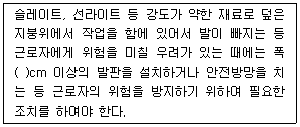
- 30
- 40
- 50
- 60
(정답률: 67%)
93. 다음에서 설명하고 있는 물건의 종류는?
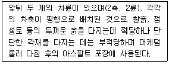
- 탬핑 롤러
- 탠덤 롤러
- 타이어 롤러
- 진동 롤러
(정답률: 62%)
94. 현장에서 근로자가 안전하게 통행할 수 있도록 통로에 설치해야하는 조명시설은 최소 몇 럭스 이상인가?
- 75Lux 이상
- 80Lux 이상
- 85Lux 이상
- 90Lux 이상
(정답률: 73%)
95. 흙막이벽 개굴착(open cut)공법에 해당하지 않는 것은
- 자립흙막이벽 공법
- 수평버팀 공법
- 어스앵커 공법
- 비탈면 개굴착 공법
(정답률: 35%)
96. 크레인이 가공전선로에 접촉하였을 때 운전자의 조치사항으로 옳지 않은 것은?
- 접촉된 가공 전선로로부터 크레인이 이탈되도록 크레인을 조정한다.
- 끊어진 전선이 크레인에 감겼을 때에는 운전자가 즉시 감긴 전선을 풀어낸다.
- 크레인 밖에서는 크레인 반대 방향으로 탈출한다.
- 운전석에서 일어나 크레인 몸체에 접촉되지 않도록 주의하여 크레인 밖으로 점프하여 뛰어내린다.
(정답률: 71%)
97. 기계장비에서 와이어로프 등의 안전계수를 가장 잘 설명한 것은?
- 와이어로프의 절단하중 값을 그 와이어로프에 걸리는 하중의 최대값으로 나눈 값을 말한다.
- 와이어로프에 걸리는 하중의 최대값을 그 와이어 로프의 절단하중 값으로 나눈 값을 말한다.
- 와이어로프의 절단하중 값을 그 와이어로프에 걸리는 하중의 평균값으로 나눈 값을 말한다.
- 와이어로프에 걸리는 하중의 평균값을 그 와이어 로프의 절단하중 값으로 나눈 값을 말한다.
(정답률: 43%)
98. 건설공사 중 작업으로 인하여 물체가 떨어지거나 날아올 위험이 있을 때 조치할 사항으로 거리가 먼 것은?
- 안전난간 설치
- 보호구의 착용
- 출입금지구역의 설정
- 낙하물방지망의 설치
(정답률: 69%)
99. 거푸집동바리 조립도에 명시해야 할 사항과 가장 거리가 먼 것은?
- 부재의 재질
- 단면 규격
- 설치간격
- 작업환경 조건
(정답률: 63%)
100. 건설현장 전기재해 중 간접접촉에 대한 방지책이 아닌 것은?
- 보호절연
- 안전전압 이하의 전기기기 사용
- 보호접지
- 충전부에 방호망 또는 절연덮개 설치
(정답률: 41%)